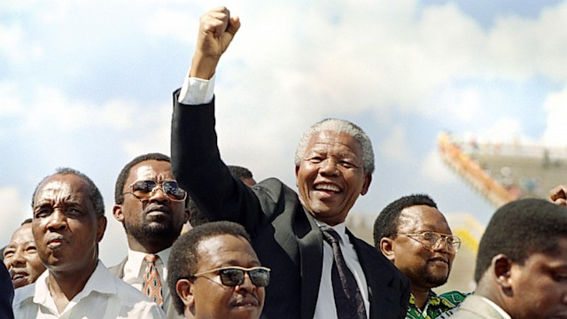

Nelson Mandela raises his fist as he attends an election rally in Mmabatho, South Africa, March 15, 1994
Here is the timeline of Nelson Mandela:
1918: July 18, Born in a village of Mvezo in South Africa.
1930: Lost his father at age 12. His first name changed from Rolihlahla to Nelson by his primary school teacher.
1941: Ran away from his village to Johannesburg and worked as a mine security officer. Met Walter Sisulu
1943: Completed his BA at University of South Africa
1944: Joined the African National Congress and helped to form ANC Youth League (ANCYL). Married Walter Sisulu’s cousin, Evelyn Mase, a nurse
1949: ANC adopted a more radical mass-based policy, the Program of Action.
1952: Stopped his BLL studies and dropped out from University of the Witwatersrand. Chosen as the National Volunteer-in-Chief of the Defiance Campaign. Sentenced to nine months of hard labor which was suspended for two years. Established first black law firm in South Africa with Oliver Tambo called Mandela & Tambo. Was banned from practicing law.
1955: He was arrested
1956: Treason Trial against him.
1958: He and his first wife divorced. He married his second wife Winnie Madikizela.
1961: Was acquitted for Treason charges
1962: Left South African under an alias David Motsamayi to get military training in Morocco and Ethiopia
1963: Sentenced to five years in prison for leaving South African under different name.
1964: He was sentenced to life in prison in Robben Island.
1968: His mother died while he still in prison. Was not allowed to attend the funeral.
1982: Transferred to Pollsmoor Prison in Cape Town.
1988: Was treated for TB and transferred to Victor Verster Prison
1989: Finally obtained his LLB through University of South Africa
1990: Released from prison.
1991: Elected ANC president.
1993: Won the Nobel Peace Prize with FW de Klerk.
1994: Inaugurated as South Africa’s first democratically elected President.
1995: Established the Nelson Mandela Children’s Fund.
1996: Divorced his second wife
1998: Married his third wife Graca Machel.
1999: Stepped down after one term as President.
2013: He died at his home in Johannesburg, South Africa.
This is one of the greatest legacies of Nelson Mandela–is to show that through a commitment to the constitution and rule of law, and equal treatment for all people, that a country can prosper despite a tragic history. US President Barack Obama– June 29, 2013.
More information about this world legend can be obtained by clicking HERE